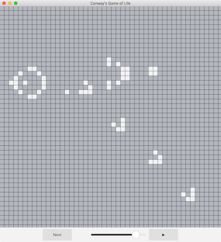

Qt Quick TableView examples - Conway’s Game of Life
The Conway’s Game of Life example shows how the QML TableView type can be used to display a C++ model that the user can pan around.

Running the Example
To run the example from Qt Creator, open the Welcome mode and select the example from Examples. For more information, visit Building and Running an Example.
The QML User Interface
TableView { id: tableView anchors.fill: parent rowSpacing: 1 columnSpacing: 1 ScrollBar.horizontal: ScrollBar {} ScrollBar.vertical: ScrollBar {} delegate: Rectangle { id: cell implicitWidth: 15 implicitHeight: 15 color: model.value ? "#f3f3f4" : "#b5b7bf" MouseArea { anchors.fill: parent onClicked: model.value = !model.value } }
The example uses the TableView component to display a grid of cells. Each of these cells is drawn on the screen by the TableView’s delegate, which is a Rectangle QML component. We read the cell’s value and we change it using model.value when the user clicks it.
contentX: (contentWidth - width) / 2; contentY: (contentHeight - height) / 2;
When the application starts, the TableView is scrolled to its center by using its contentX and contentY properties to update the scroll position, and the contentWidth and contentHeight to compute where the view should be scrolled to.
model: GameOfLifeModel { id: gameOfLifeModel }
The model that we use is a custom C++ class that we register in the QML system:
qmlRegisterType<GameOfLifeModel>("GameOfLifeModel", 1, 0, "GameOfLifeModel");
The C++ Model
class GameOfLifeModel : public QAbstractTableModel { Q_OBJECT Q_ENUMS(Roles) public: enum Roles { CellRole }; QHash<int, QByteArray> roleNames() const override { return { { CellRole, "value" } }; } explicit GameOfLifeModel(QObject *parent = nullptr); int rowCount(const QModelIndex &parent = QModelIndex()) const override; int columnCount(const QModelIndex &parent = QModelIndex()) const override; QVariant data(const QModelIndex &index, int role = Qt::DisplayRole) const override; bool setData(const QModelIndex &index, const QVariant &value, int role = Qt::EditRole) override; Qt::ItemFlags flags(const QModelIndex &index) const override; Q_INVOKABLE void nextStep(); Q_INVOKABLE bool loadFile(const QString &fileName); Q_INVOKABLE void loadPattern(const QString &plainText); Q_INVOKABLE void clear(); private: static constexpr int width = 256; static constexpr int height = 256; static constexpr int size = width * height; using StateContainer = std::array<bool, size>; StateContainer m_currentState; int cellNeighborsCount(const QPoint &cellCoordinates) const; static bool areCellCoordinatesValid(const QPoint &coordinates); static QPoint cellCoordinatesFromIndex(int cellIndex); static std::size_t cellIndex(const QPoint &coordinates); };
The GameOfLifeModel class extends QAbstractTableModel so it can be used as the model of our TableView component. Therefore, it needs to implement some functions so the TableView component can interact with the model. As you can see in the private part of the class, the model uses a fixed-size array to store the current state of all the cells.
int GameOfLifeModel::rowCount(const QModelIndex &parent) const { if (parent.isValid()) return 0; return height; } int GameOfLifeModel::columnCount(const QModelIndex &parent) const { if (parent.isValid()) return 0; return width; }
Here, the rowCount and columnCount methods are implemented so the TableView component can know the size of the table. It simply returns the values of the width and height constants.
QVariant GameOfLifeModel::data(const QModelIndex &index, int role) const { if (!index.isValid() || role != CellRole) return QVariant(); return QVariant(m_currentState[cellIndex({index.column(), index.row()})]); }
This method is called when the TableView component requests some data from the model. In our example, we only have one piece of data by cell: whether it is alive or not. This information is represented by the CellRole value of the Roles enum in our C++ code; this corresponds to the value property in the QML code (the link between these two is made by the roleNames() function of our C++ class).
The GameOfLifeModel class can identify which cell was the data requested from with the index parameter, which is a QModelIndex that contains a row and a column.
Updating the Data
bool GameOfLifeModel::setData(const QModelIndex &index, const QVariant &value, int role) { if (role != CellRole || data(index, role) == value) return false; m_currentState[cellIndex({index.column(), index.row()})] = value.toBool(); emit dataChanged(index, index, {role}); return true; }
The setData method is called when a property’s value is set from the QML interface: in our example, it toggles a cell’s state when it is clicked. In the same way as the data() function does, this method receives an index and a role parameter. Additionally, the new value is passed as a QVariant, that we convert to a boolean using the toBool function.
When we update the internal state of our model object, we need to emit a dataChanged signal to tell the TableView component that it needs to update the displayed data. In this case, only the cell that was clicked is affected, thus the range of the table that has to be updated begins and ends at the cell’s index.
void GameOfLifeModel::nextStep() { StateContainer newValues; for (std::size_t i = 0; i < size; ++i) { bool currentState = m_currentState[i]; int cellNeighborsCount = this->cellNeighborsCount(cellCoordinatesFromIndex(static_cast<int>(i))); newValues[i] = currentState == true ? cellNeighborsCount == 2 || cellNeighborsCount == 3 : cellNeighborsCount == 3; } m_currentState = std::move(newValues); emit dataChanged(index(0, 0), index(height - 1, width - 1), {CellRole}); }
This function can be called directly from the QML code, because it contains the Q_INVOKABLE macro in its definition. It plays an iteration of the game, either when the user clicks the Next button or when the Timer emits a triggered() signal.
Following the Conway’s Game of Life rules, a new state is computed for each cell depending on the current state of its neighbors. When the new state has been computed for the whole grid, it replaces the current state and a dataChanged signal is emitted for the whole table.
bool GameOfLifeModel::loadFile(const QString &fileName) { QFile file(fileName); if (!file.open(QIODevice::ReadOnly)) return false; QTextStream in(&file); loadPattern(in.readAll()); return true; } void GameOfLifeModel::loadPattern(const QString &plainText) { clear(); QStringList rows = plainText.split("\n"); QSize patternSize(0, rows.count()); for (QString row : rows) { if (row.size() > patternSize.width()) patternSize.setWidth(row.size()); } QPoint patternLocation((width - patternSize.width()) / 2, (height - patternSize.height()) / 2); for (int y = 0; y < patternSize.height(); ++y) { const QString line = rows[y]; for (int x = 0; x < line.length(); ++x) { QPoint cellPosition(x + patternLocation.x(), y + patternLocation.y()); m_currentState[cellIndex(cellPosition)] = line[x] == 'O'; } } emit dataChanged(index(0, 0), index(height - 1, width - 1), {CellRole}); }
When the application opens, a pattern is loaded to demonstrate how Conway’s Game of Life works. These two functions load the file where the pattern is stored and parse it. As in the nextStep function, a dataChanged signal is emitted for the whole table once the pattern has been fully loaded.